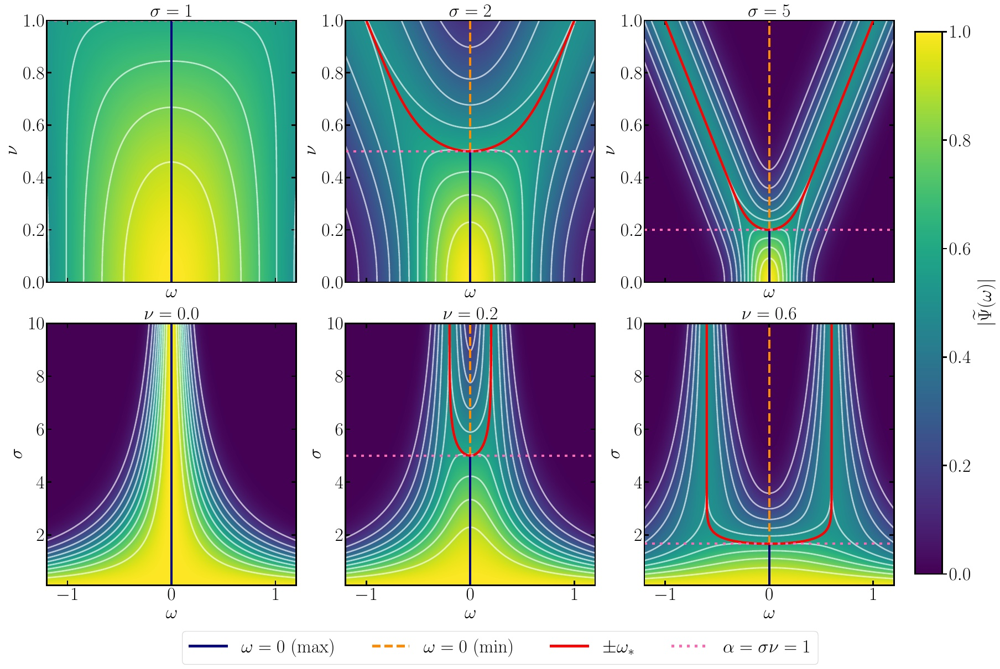
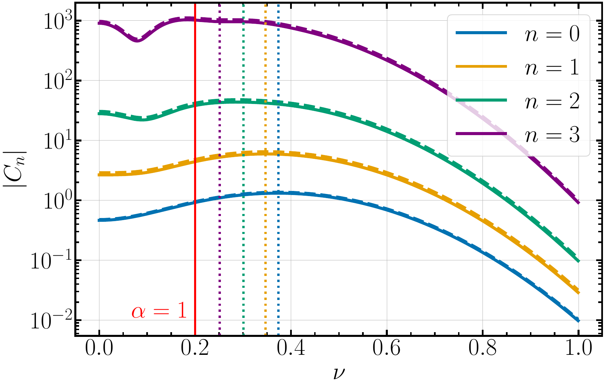
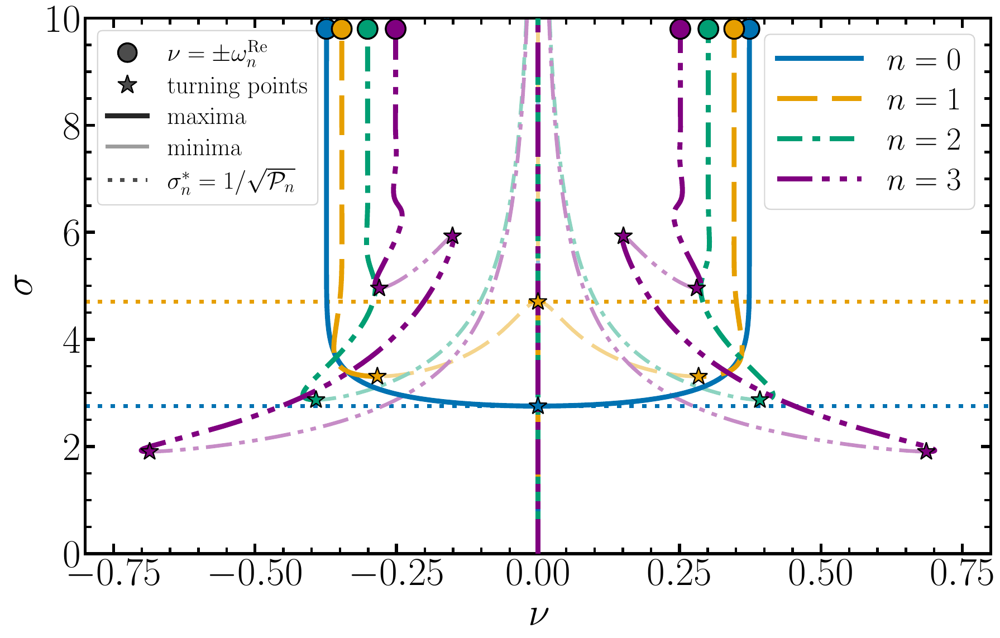
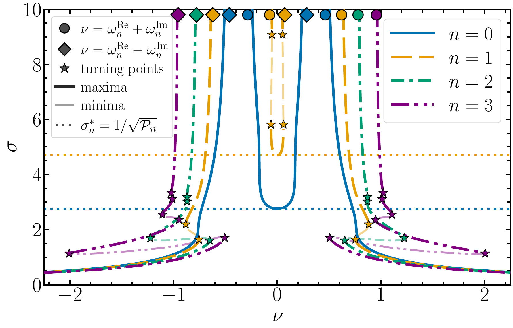
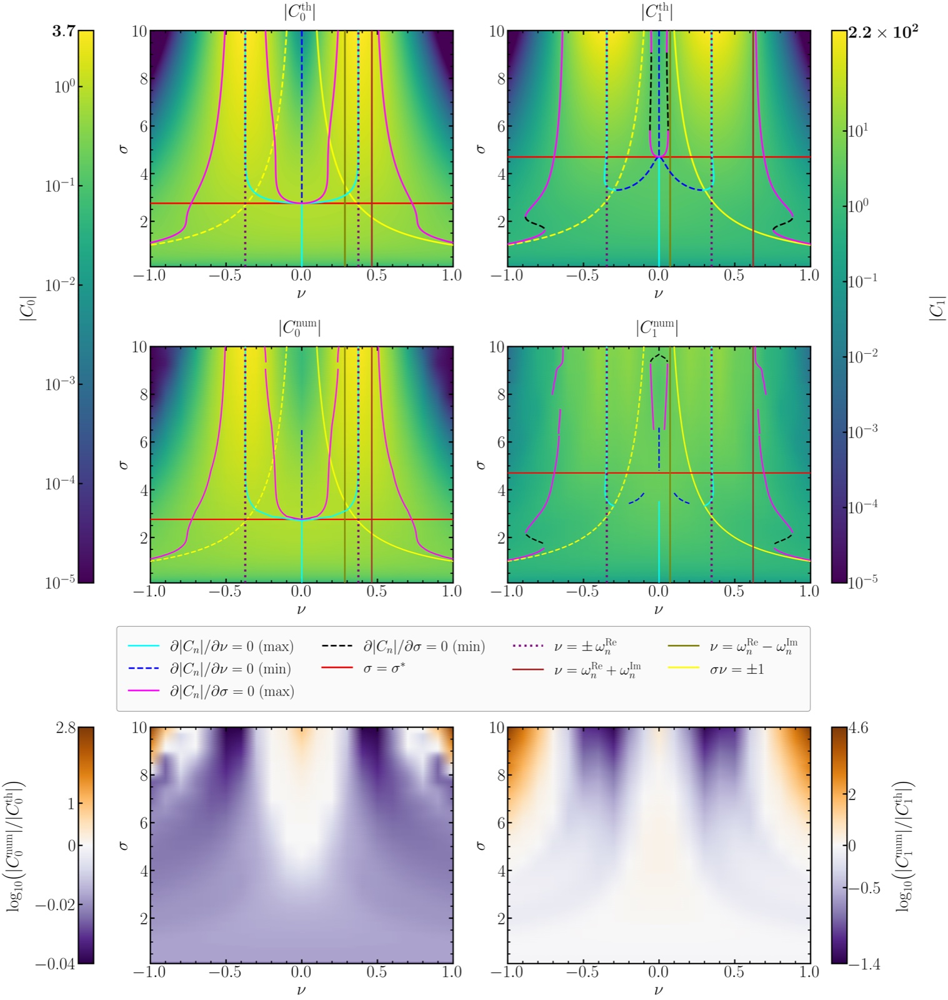
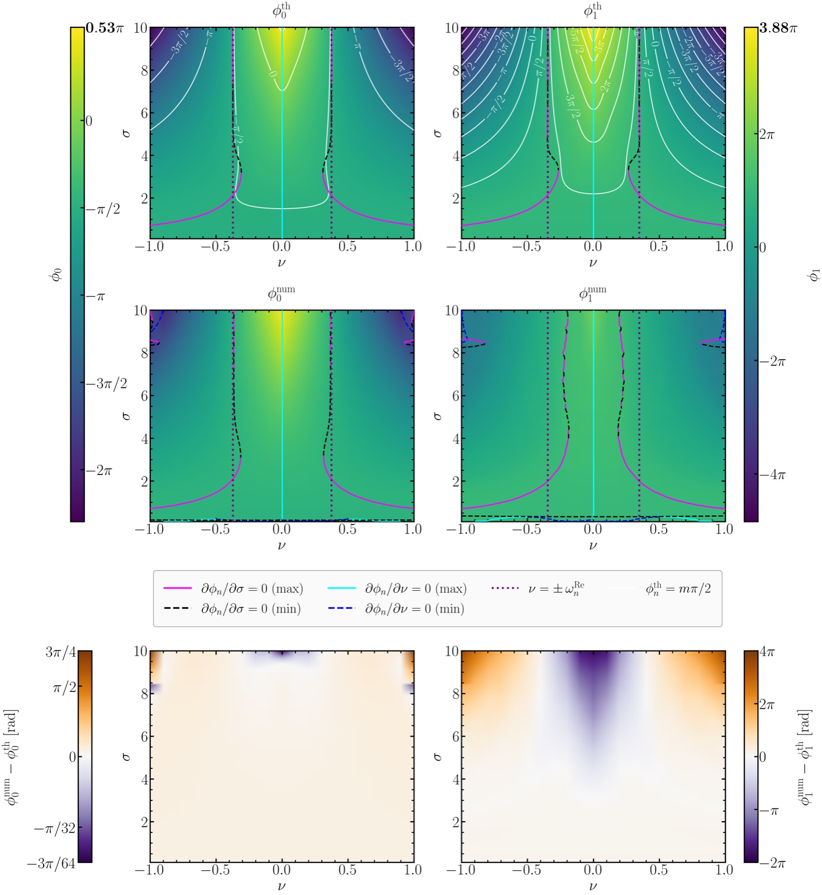

Paper overview
How strongly a black hole rings in each of its quasinormal modes depends on the perturbation that excites it. This paper maps that dependence over the full parameter space of an oscillatory Gaussian perturbation, its width $\sigma$ and its carrier frequency $\nu$, for both the amplitude and the phase of the excitation coefficients $C_n$. The map shows that tuning the carrier to the mode frequency maximises the excitation only for narrowband sources, and that the positive- and negative-frequency components of a real source interfere, shaping both the amplitude and the phase of the ringdown.
In Paper I we showed that a black hole acts as a bank of resonant spectral filters. At future null infinity the quasinormal-mode content of the signal is
where the excitation factor $B_n$ depends only on the black hole and the mode, and the overlap $T_n$ is, in the asymptotic regime, the spatial Fourier transform of the perturbation evaluated at the complex frequency $\omega_n=\omega_n^{\rm Re}-i\,\omega_n^{\rm Im}$. As in Paper I, the initial data are oscillatory Gaussian pulses,
whose spectrum is
The paper studies the Schwarzschild $\ell=2$ modes, from the fundamental mode to the third overtone, and asks how $|C_n|$ and $\arg C_n$ change across the whole $(\sigma,\nu)$ plane.
The spectrum of the source has two branches centred at $\omega=\pm\nu$, each with a width $\sim1/\sigma$. When they overlap they merge into a single peak at $\omega=0$. The transition happens at
For $\alpha<1$ the pulse is broadband and its power is concentrated at low frequencies. For $\alpha>1$ the spectrum splits into two resolved peaks that approach $\pm\nu$, and the width and carrier frequency become independent knobs for the bandwidth and the central frequency. The same bifurcation appears for any real modulated pulse $f(r_\star)\cos(\nu r_\star)$; the Gaussian envelope only fixes the exact threshold.

For this family of initial data the overlap can be computed in closed form. It is the coherent sum of the two frequency branches of the source,
Because $\omega_n$ is complex, the two terms carry a relative phase set by the damping rate, and their sum contains an interference term. The amplitude factorises exactly into a Gaussian envelope and an interference factor,
with
For a non-oscillatory pulse, $\nu=0$, the interference factor is constant and the response is set by the envelope alone. For $\nu\neq0$ the oscillating cosine modulates the amplitude, and its weight relative to the hyperbolic term is controlled by the ratio $\omega_n^{\rm Re}/\omega_n^{\rm Im}$. Weakly damped modes ($\mathcal{P}_n>0$, here $n=0,1$) are barely affected, while strongly damped overtones ($\mathcal{P}_n<0$, $n=2,3$) develop dips at finite carrier frequency. The mechanism is not specific to the Gaussian: any real oscillatory source gives $T_n\propto F(\omega_n+\nu)+F(\omega_n-\nu)$.

The stationary points of the amplitude follow from the derivatives of $\ln|T_n|^2$. The line $\nu=0$ is always stationary, and its curvature along $\nu$ is
which changes sign at the critical width
the optimal width of a non-oscillatory Gaussian found in Paper I ($\sigma_0^\ast\simeq2.75$, $\sigma_1^\ast\simeq4.70$). For narrower pulses, $\sigma<\sigma_n^\ast$, the strongest excitation occurs at $\nu=0$: the source is broadband enough to overlap with the mode without any carrier at all. Above $\sigma_n^\ast$, $\nu=0$ becomes a minimum and two maxima move out towards $\nu=\pm\omega_n^{\rm Re}$. The familiar resonance-matching picture is therefore recovered only in the narrowband limit.
For the strongly damped overtones no critical width exists and $\nu=0$ stays a maximum at every width. Their extrema curves fold through several turning points, and at some widths ($\sigma\simeq3.05$ for $n=2$; $\sigma\simeq2.87$ and $5.06$ for $n=3$) the carrier frequency $\nu=\omega_n^{\rm Re}$ is even a minimum of the excitation: a mode can be weakly excited despite the source being exactly on resonance.

The complementary question is which width maximises the excitation at a fixed carrier frequency. For wide pulses the hyperbolic part of the interference factor dominates and the stationarity condition along $\sigma$ reduces to
The power spectrum of a damped mode is a Lorentzian centred at $\omega_n^{\rm Re}$ with half-width $\omega_n^{\rm Im}$. A finite optimal width exists only when the carrier lies outside this linewidth; inside it, the excitation keeps growing with $\sigma$. The stationary branches therefore approach the half-power points $\nu\to\omega_n^{\rm Re}\pm\omega_n^{\rm Im}$ as $\sigma\to\infty$. Combining both stationarity conditions shows that the only joint stationary point of the plane is $(\nu,\sigma)=(0,\sigma_n^\ast)$, and that it is not a maximum: the excitation keeps increasing along the branch of $\sigma$-maxima that starts there.

The analytical landscape is compared with excitation coefficients extracted from time-domain Regge–Wheeler evolutions over the whole $(\sigma,\nu)$ plane. The extraction recovers the source bifurcation, the critical width, the resonant frequencies and the linewidth boundaries, together with most of the stationary branches. The median relative difference in $|C_0|$ is about $4\%$. For the first overtone, which decays about three times faster and is harder to fit, it is $16\%$ for $\sigma\leq5$ and $36\%$ over the full plane.

The phase of the excitation coefficient carries information that the amplitude does not. It separates into a mode-only, a width-only and a carrier-dependent term,
where the last term is generated by the same two-branch interference,
The phase is nonzero even though the source itself carries no phase: it comes from evaluating the source spectrum at a complex frequency. Unlike the amplitude, its structure along $\nu$ never changes: $\nu=0$ is the unique maximum at every width and for every mode. Along $\sigma$, the stationary branches approach $\nu=\pm\omega_n^{\rm Re}$ in the narrowband limit, whereas the amplitude branches approach the linewidth edges $\omega_n^{\rm Re}\pm\omega_n^{\rm Im}$. Amplitude and phase therefore encode the real and imaginary parts of the quasinormal-mode frequency in complementary ways. The time-domain phases agree with the prediction to a median of $0.14\,{\rm rad}$ for $n=0$ and $0.34\,{\rm rad}$ for $n=1$ with $\sigma\leq5$.

The landscapes show that quasinormal-mode excitation cannot be understood through frequency matching alone. A broadband perturbation can excite a mode efficiently with no carrier tuned to it, while a source exactly on resonance can leave a strongly damped overtone almost silent. The interference between the two frequency branches is a generic feature of real oscillatory sources, complementary to the interference between different modes studied in the context of spectral instabilities.
These results are relevant for interpreting the ringdown of sources whose spectral content is broad compared with the quasinormal-mode linewidth. A natural next step is to apply the same analysis to physically motivated sources, such as near-circular and eccentric plunges, with direct relevance for extreme-mass-ratio inspirals.
For a real oscillatory source, the excitation of each mode is a Gaussian spectral envelope modulated by the interference of the two frequency branches:
Matching the carrier to the mode frequency is optimal only for narrowband sources, and the phase provides an independent handle on the complex quasinormal-mode spectrum. Together, amplitude and phase turn the excitation coefficients into a spectroscopic map of how a source probes the black-hole resonances.
Explore the amplitude and phase of the excitation coefficients $C_n$ in the $(\sigma,\nu)$ plane for the fundamental mode and the first three overtones. The amplitude view shows $\log_{10}|C_n|$ and the phase view the unwrapped phase $\arg C_n$, together with the stationary curves and reference lines such as $\nu=\pm\omega_n^{\rm Re}$. Select the quantity and overtone below, then rotate, zoom and inspect the three-dimensional surface.